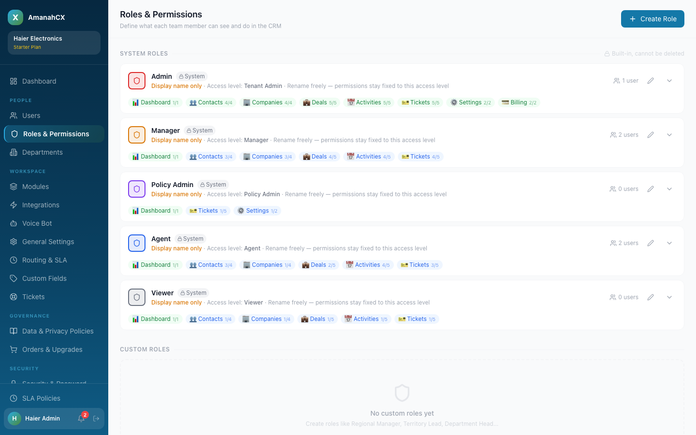
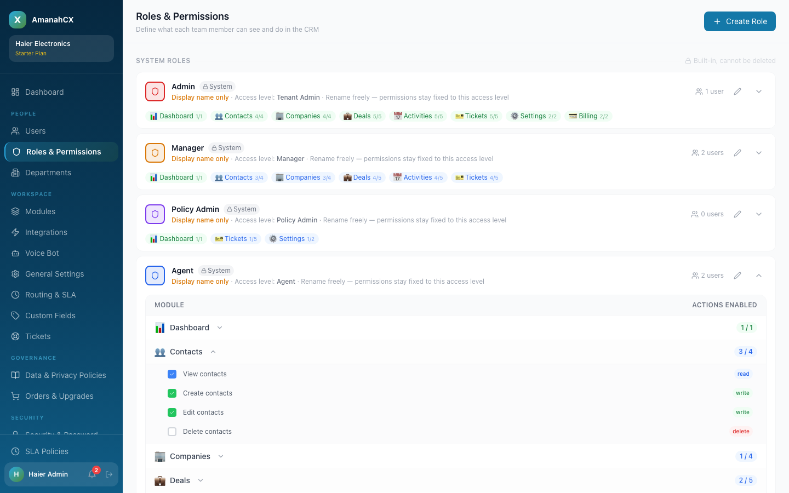
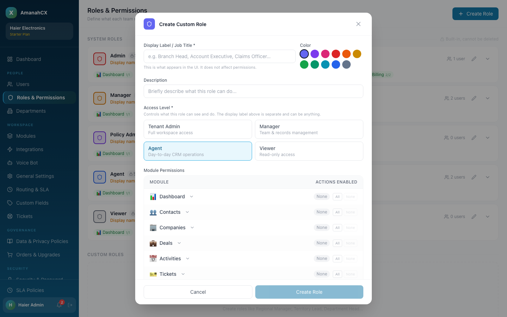
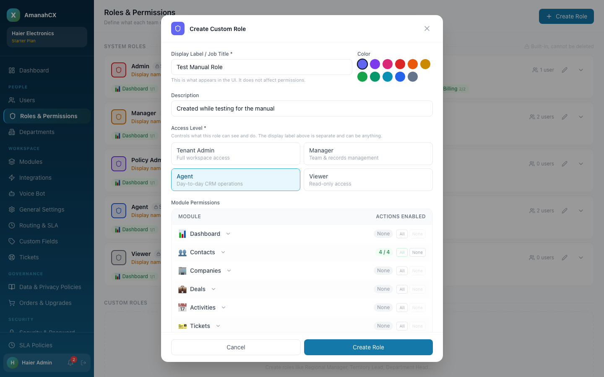
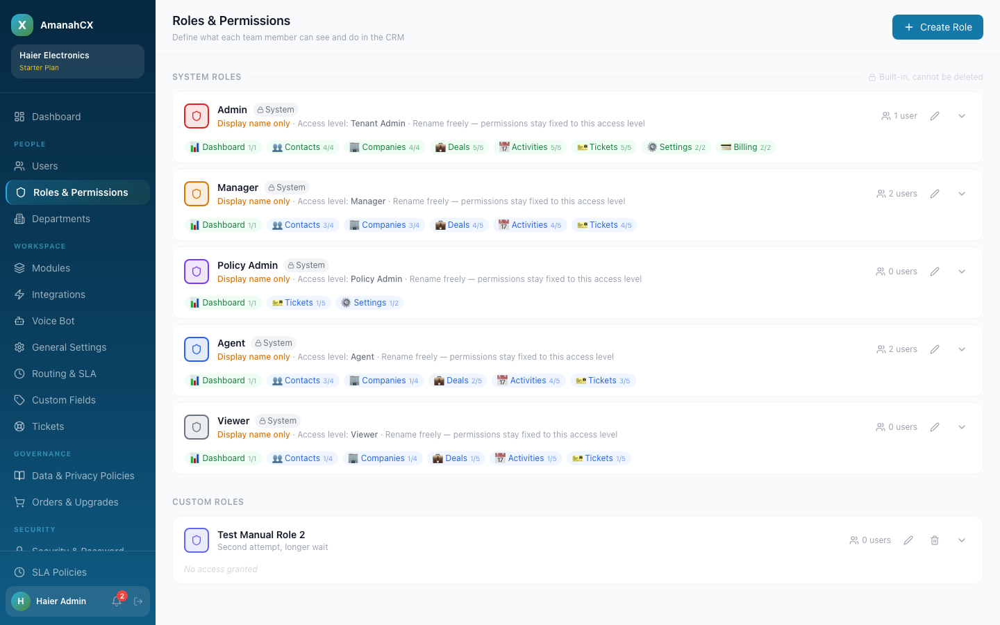

Roles & Permissions (People → Roles & Permissions) controls exactly what each team member can see and do — down to individual actions like "view" vs. "edit" vs. "delete" on every module.

| Role | Access level | Who should have it |
|---|---|---|
| Admin | Full workspace access — every module, plus Settings and Billing | The one or two people who own the workspace itself (billing, integrations, user management). Keep this small. |
| Manager | Team & records management — broad read/write on Contacts, Companies, Deals, Activities, Tickets, but no Settings or Billing | Department heads / line managers who oversee a team's day-to-day work but shouldn't touch workspace configuration. |
| Policy Admin | Narrow — Dashboard, Tickets (limited), and part of Settings only | Someone who needs to define SLA/ticket policy rules for one or more departments without full admin rights. Can be scoped to only govern specific departments (set when inviting them — see Users). |
| Agent | Day-to-day CRM operations — can view/create/edit records but not delete most of them | Frontline staff: sales reps, support agents, anyone doing the actual customer-facing work. |
| Viewer | Read-only across the board | Anyone who needs visibility (auditors, stakeholders, trainees) but should never change data. |
Click the chevron on the right of any role to expand it and see a per-module breakdown, then click a module row to see the individual actions (view / create / edit / delete) it controls.

Each action is colour-coded by type (read in blue, write in green, delete in red) so you can scan a role's real reach at a glance.
If the five system roles don't fit — say you need a "Branch Head" with a specific mix of permissions — click + Create Role.

The Access Level you choose (Tenant Admin / Manager / Agent / Viewer) sets the ceiling — a custom role can't exceed what that access level is allowed to do, but you can narrow it down module by module using the All / None shortcuts or individual checkboxes.

New custom roles appear under Custom Roles at the bottom of the page, and immediately become selectable when inviting or editing a user (see Users).

Creating a custom role appeared to silently fail at first (the list still showed "No custom roles yet" right after saving). Checked the database directly — the role had actually saved correctly every time. It was purely the on-screen list taking a few seconds to catch up, not a real bug. Confirmed by waiting slightly longer: the new role appeared correctly, both after a full page reload and within the same session.